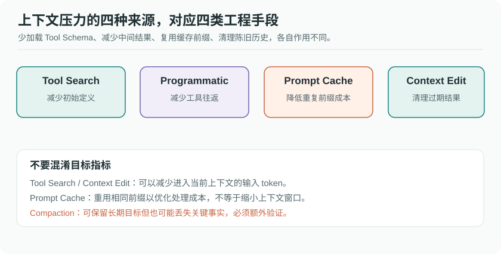
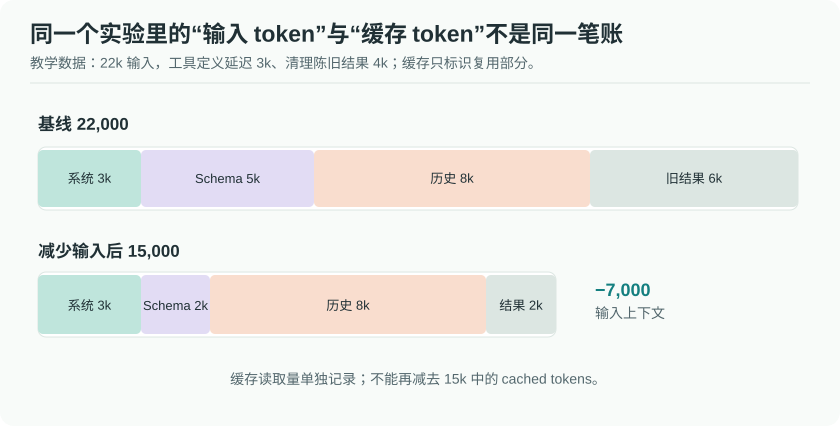

Context Engineering：工具发现、缓存、清理与可测成本
以真实 API 可观测指标区分 Tool Search、Programmatic Tool Calling、Prompt Caching、Context Editing 和 Compaction，用离线 token 账本替代未经核实的固定命中率。
Context Engineering 是管理有限证据，不是把提示词写得越长越好
一个 Agent 在一次任务中可能读取大量仓库文件、数十个工具定义、几百条历史结果。即使模型窗口足够，低价值或过时的材料依然会挤占关键上下文。Context Engineering 的目标是让模型在需要作出决定时拥有必要、可追溯且不过时的信息，同时控制成本和延迟。
必须区分四个目标：减少当前输入 token、减少重复输入的处理成本、降低模型请求往返次数、提高长期任务的事实保真度。这四个目标不能只用一个“缓存命中率”代表。

从 Tool Search 开始：何时需要加载工具定义
当一个 Agent 连接多个 MCP 服务器，提供几十个工具时，模型并不需要每次看到所有输入 Schema。Claude Platform 支持推迟工具定义加载，通过 Tool Search 根据任务选择需要的工具；这能降低起始 Schema 的上下文成本，但加入了发现步骤。
在自建 Harness 中，类似的设计是保留工具名字和描述目录，而在工具真正成为候选时才加载详细 JSON Schema。与第 19 章配合时，要确认多服务器工具名称唯一、允许范围独立，并且工具可用性变化已同步到目录。
Programmatic Tool Calling：减少中间结果进入消息历史
若模型需要连续查询多个只读工具，可以让支持此功能的执行环境在一次脚本或工具流程中完成聚合，最终只向模型返回简要结果。Anthropic 的官方工具上下文管理文档把这种方式称为 Programmatic Tool Calling：目标主要是减少多次 tool_use/tool_result 往返和中间结果占用，而不是把所有权限问题交给一个脚本。
需要执行策略审核、隔离和输出限额；脚本中每个工具的权限不得因为“统一批处理”被自动扩大。只要某个步骤是写入或对外提交，就应采用相应的审批规则。
Prompt Caching：缓存能省成本，但不能扩大上下文窗口
缓存复用相同前缀，避免重复处理的成本和延迟；但模型面对该请求时，已缓存的工具定义与历史仍占用上下文预算。所以不能用缓存读取 token 数去减去上下文窗口使用量。
现代 API 的 usage 字段通常将 input_tokens、cache_creation_input_tokens、cache_read_input_tokens 分列。分析一个请求的实际输入大小时，应把这些输入类别相加，再区别输出 token；具体字段和计费规则需参照模型、平台和 SDK 版本。
旧稿的“92%”与“预热算法”不成立为事实
旧稿称 Claude Code 固定获得 92% 前缀缓存命中，并披露私有断点自动放置算法、特殊预热流程。这些主张缺乏可复核的版本化公开证据，因此本章改成可记录 usage 的实验方法，不再计算虚构的绝对成本收益。
Context Editing 和 Compaction 如何避免遗忘重要事项
Context Editing 能清理已经不再需要的早期工具结果；Compaction 把较长消息历史整理为更短的摘要，适合长任务，但摘要可能漏掉未完成的测试、否定条件、证据引用和权限约束。缓存与压缩不是同一种机制，也不应该写成固定的五阶段私有流水线。
清理前要保留一个外部结构化检查点：目标、不可变约束、已验证事实、未完成事项以及必要的原始文件引用。第 11 章 Handoff Journal 和第 09 章 TaskBoard 都可以成为验收清单的一部分。
可复现的 Token 账本和离线反事实实验
用官方 Token Counting 或真实响应 usage 先记录基线，再只改变一个因素。为教学可重复性，示例假设稳定系统信息 3k、工具定义 5k、活跃历史 8k、陈旧结果 6k，总计 22k。若按需加载减少定义 3k，清理旧结果减少 4k，本次输入总量变为 15k。

base = InputBreakdown(3000, 5000, 8000, 6000)
report = simulate(base,
deferred_schema_tokens=3000,
removed_stale_result_tokens=4000,
cached_prefix_tokens=4500)
assert report["saved_context_tokens"] == 7000
assert report["cached_context_savings"] == 0完整代码见 examples/context_tuning.py，不使用第三方依赖或假定特定模型的窗口大小。
怎么设计真正能比较的 A/B 实验
- 锁定模型与版本、提示词、样本任务、工具授权和网络环境。
- 每个变更组只修改一项策略，如是否 defer 某些工具定义。
- 记录 API 的真实 token usage、缓存读写、延迟分位数、工具调用次数和失败率。
- 对长任务核验关键约束是否保留、最终测试是否通过、是否发生越权或错误复试。
- 在重复样本上报告范围与不确定性，避免从一次偶然的缓存命中率推广为产品固定常数。
对于大量相似请求，Prompt Caching 可能降低账面成本；对于大量无关工具，Tool Search 可能改善上下文压力；最终应通过可复现任务集比较质量和成本，而不是“优化率”单一指标。
离线测试：拒绝丢失关键约束
运行 python3 -m unittest discover -s examples -p 'test_*.py'。测试分别证明：缓存前缀不会减少上下文 token；工具延迟加载与旧结果清理会减少输入；API token 类别需要正确相加；摘要丢失“不可修改生产数据”会被拒绝。
input_tokens、cache_creation_input_tokens 和 cache_read_input_tokens。解释为什么第二次请求“缓存更多”不等于当前上下文里“文本更少”。官方资料与实验范围
- Claude Platform: Manage Tool Context — Tool Search、Programmatic、Cache、Context Edit 的作用区分
- Claude Platform: Prompt Caching — 缓存前缀与使用量
- Claude Platform: Context Editing — 工具结果清理
- Claude Platform: Compaction — 长期会话压缩与保真风险
- Claude Platform: Token Counting — 输入 token 测量
文中 token 只是离线教学数据；没有宣称实际 Claude Code 缓存命中率或生产成本。请用真实 API usage 与一致的实验输入验证。